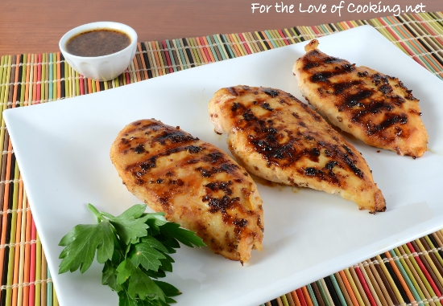

Honey Mustard Grilled Chicken

Description:
This Honey Mustard Grilled Chicken dish is perfect for a day out by the beach
or in the park. If you are looking something that is quick and easy, which can
also fill the hungry bellys of your guests, then this dish is it! This recipe is
structured for a total of 4 servings, it takes 15 minutes to prepare, and 20
minutes to cook. Enjoy!
Ingredients:
- 4 skinless, boneless chicken breast halves
- 1 teaspoon steak sauce
- 1/4 cup honey
- 1/3 cup Dijon mustard
- 2 tablespoons mayonnaise
Steps:
- Preheat the grill for medium heat.
- In a shallow bowl, mix the mustard, honey, mayonnaise, and steak sauce.
Set aside a small amount of the honey mustard sauce for basting, and dip the
chicken into the remaining sauce to coat.
- Lightly oil the grill grate. Grill chicken over indirect heat for 18 to 20
minutes, turning occasionally, or until juices run clear. Baste occasionally
with the reserved sauce during the last 10 minutes. Watch carefully to prevent
burning!
Next Recipe
Return to Main Page